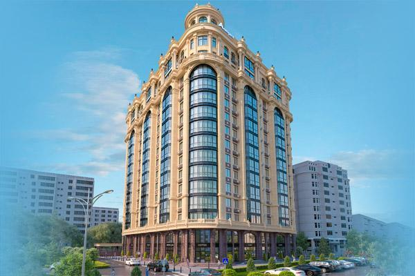
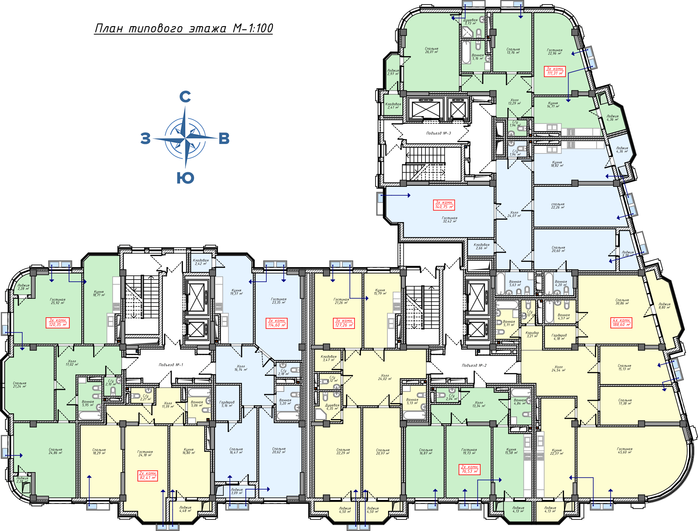
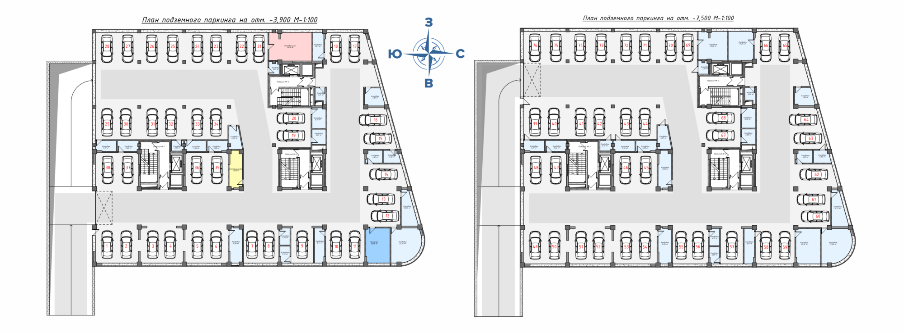
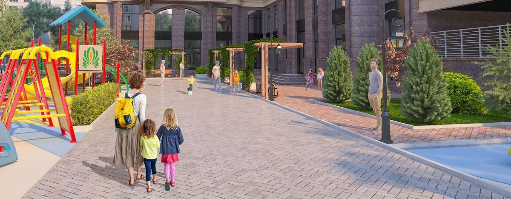

О нас
АВАНГАРД СТИЛЬ
ДОВЕРИЕ, ЗАСЛУЖЕННОЕ ГОДАМИБОЛЕЕ 150 ОБЪЕКТОВ
ЖИЛЫХ И КОММЕРЧЕСКИХ600 000 КВАДР. МЕТРОВ
ЖИЛОЙ И КОММЕРЧЕСКОЙ НЕДВИЖИМОСТИSINCE 1998
НОВЕЙШИЕ ТЕХНОЛОГИИНАШИ ОБЪЕКТЫ
О ЖИЛОМ КОМПЛЕКСЕ
«Испанский дом» – уникальный жилой комплекс премиум-класса с небывалым архитектурным решением, непривычным для нашего любимого города. На создание «Испанского дома» нас вдохновила архитектура зданий города Мадрид. Посетив в 2018 году город столицу Испании наше руководство решило украсить город частичкой испанского духа и красотой сооружений этого необычного города. Мы вдохновлялись такими зданиями города Мадрид, как «Edificio Metrópolis», «Four Seasons Hotel Madrid», «Edificio Banesto» где ныне расположен «Испанский кредитный банк». Все эти архитектурные шедевры воплощены в жилом комплексе премиум-класса «Испанский дом»
ЛОКАЦИЯ
Одним из важных преимуществ является локация, которая определяет статус и класс дома. «Испанский дом» расположен в 7 микрорайоне, который по праву считается одним из престижных районов нашего любимого Бишкека. Развитая инфраструктура, близость парков, школ, детских садов и мест проведение досуга – особое преимущества жилого комплекса «Испанский дом». Удобность подъездных путей и развитость транспортных развязок и при всем этом – чистый воздух и близость гор никого не оставит равнодушнымПЛАНИРОВКА ТИПОВОГО ЭТАЖА
ПЛАНИРОВКА ПОДЗЕМНОГО ПАРКИНГА "ИСПАНСКОГО ДОМА"
МЕСТОРАСПОЛОЖЕНИЕ
Расположение дома традиционно является одним из его главных преимуществ. 7 микрорайон — престижный район нашего любимого города Бишкек. Развитая инфраструктура, транспортные развязки, но при всем при этом — чистый воздух и близость гор никого не оставят равнодушными. В шаговой доступности:
БЛАГОУСТРОЙСТВО
Уединенный отдых жителей – главный принцип организации пространства в жилом комплексе «Испанский дом». Прогуливаться в уютном дворе, отдыхать, устроившись в изящной беседке, наслаждаться изысканной европейской архитектурой собственного дома — это все кадры из жизни счастливых обладателей квартир «Испанского дома»
AVANGARD CITY - ГОРОД ВАШЕЙ МЕЧТЫ!
У каждого из нас есть любимый город, с которым связаны самые дорогие сердцу воспоминания. Город, с которым мы делим все свои самые счастливые минуты и мечты — это Бишкек. За 140 лет он собрал в себе историю Пишпека, достояние Фрунзе и стал уютным Бишкеком. Тихий и родной он очаровывает любимыми бульварами, просторными проспектами, пышно-зелеными парками, уютными кофейнями и очень отзывчивыми людьми. В честь 140-летия любимой столицы и своего 20-ти летнего юбилея Строительная компания «Авангард Стиль», в знак искренней любви к Бишкеку, дарит жителям новый грандиозный проект — жилой городок «Avangard CITY». Этот год знаменательный как для нашего города, так и для нас, мы вместе отмечаем юбилей.Добро пожаловать в «Avangard CITY»! Это новый проект бизнес-класса с исключительно привлекательным местоположением в любимой столице: неподалеку от Южных Ворот.
«Avangard CITY» – городок с уникальной и выразительной архитектурой. Комплекс представляет собой ансамбль из 10 домов единого архитектурного стиля этажностью от 10 до 14 уровней. При взгляде сверху дома образуют букву «А», что символично перекликается с названием комплекса. Широкий выбор квартир позволит Вам подобрать жилье под самые разные запросы: небольшие студии, комфортабельные и функциональные 1, 2, 3 и 4-ех комнатные квартиры. Для тех, кто хочет приобрести просторные апартаменты, есть возможность увеличить площадь на стадии строительства. Продуманные планировки позволяют использовать площадь максимально эффективно и создать идеальное пространство для жизни.
Неповторимая архитектурно-планировочная концепция, великолепный калейдоскоп парков, безупречно оснащенная спортивная территория, детские игровые зоны, многоуровневый паркинг формируют уникальную атмосферу городка. У вас появится больше времени на заботу о себе и своих близких. Цветущие деревья весной, яркие клумбы летом и броские краски осенью – ландшафтный двор «Avangard CITY» будет радовать Вас круглый год. Безопасность, комфорт и эстетика – три фундаментальных принципа, по которым проектируется уютный двор комплекса. По традиции мы придерживаемся концепции «двор без машин», что обеспечит вашу безопасность, в особенности детей. Для автомобилей предусмотрен просторный двухуровневый подземный паркинг с рекордным количеством парковочных мест.
О ЖИЛОМ КОМПЛЕКСЕ
Жилой дом «Арбат» — великолепный дом бизнес класса, созданный по эксклюзивному проекту. Утонченная европейская архитектура, отличное расположение в самом центре столицы, безопасная территория, изысканный дизайн холла и подъездов, наличие всех инженерных коммуникаций – все это лишь малая часть особенностей дома